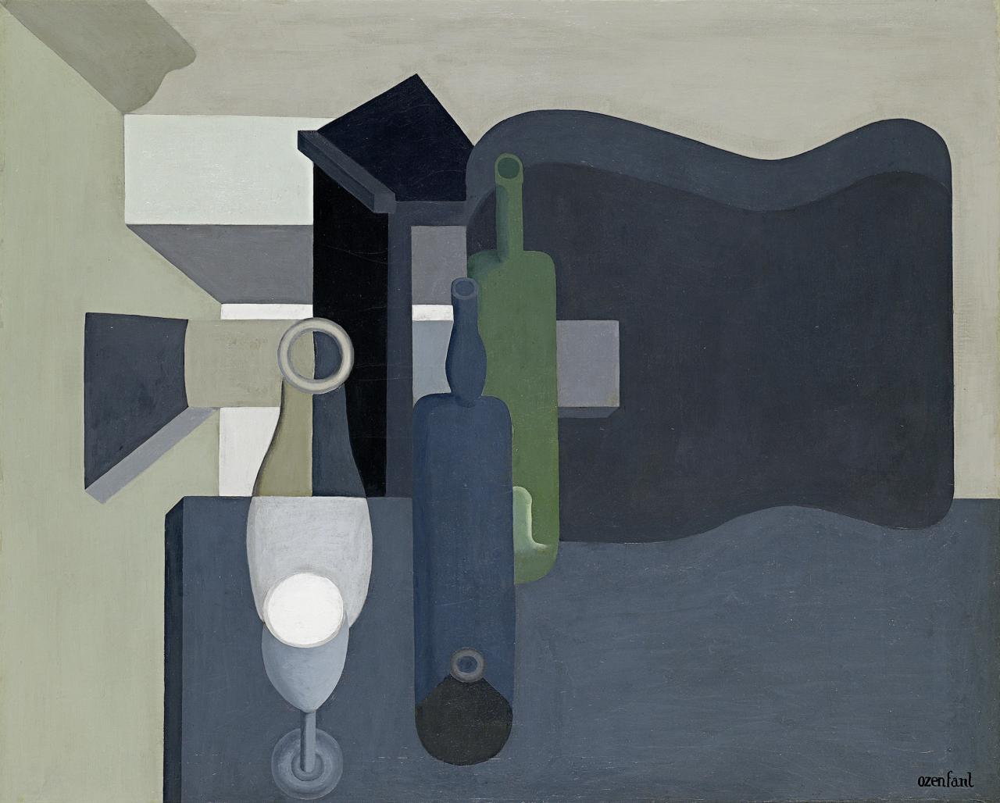

Ozenfant
Озанфан - це HTML-шаблонізатор з мінімалістичним синтаксисом і широкими можливостями. Названий на честь ідеолога пуризму - Амеде Озанфана. Він не використовує virtual DOM, однак і не є класичним string-based шаблонізатором. Озанфан використовує вставку готового HTML для початково рендерингу і запам"ятовує посилання на конкретні DOM-вузли для подальшої модифікації окремих частин шаблону. Завдяки цьому він працює набагато швидше за строкові шаблонізатори.
Основи синтаксису
<div>
<div class="foo boo">
Hello,
<span id="main" class="bar" style="color: red">
world!
</span>
<a href="google.com.ua" target="_blank" style="text-decoration: underline">
Google
</a>
</div>
<form>
<input type="text" value="Enter something" />
</form>
</div>
|V
.
.foo.boo
"Hello,"
span.bar(id: main, color: red)
"world!"
a(href: google.com.ua, target: _blank, text-decoration: underline)
"Google"
form
text(value: Enter something)
Цей приклад ілюструє основі особливості і правила Ozenfant:
- структура в Озанфан передається за допомогою відступів(як в Python), тому вони є критично важливими.
- звичайний ДОМ-вузол передається крапкою ".". За умовчанням, це тег div.
- класи вузла вказуються по черзі, через крапку(напр., ".foo.boo")
- атрибути тега вказуються в дужках за шаблоном attrName: attrValue, наприклад (href: google.com.ua, target: _blank)
- inline-стилі тега вказуються так само, поруч із атрибутами: (id: main, color: red).
- текстові вставки обгортаються в лапки, пишуться, як і теги, з нової строчки і з відповідними відступами
- деякі теги мають альтернативні скорочені варіанти запису, наприклад, <input type="text"> -> text, <input type="checkbox"> -> checkbox і т.д.
- у кожного шаблона завжди мусить бути тільки один кореневий вузол
Змінні
За допомогою змінни можна змінювати частини шаблону, не вдаючись до його повного перерендерингу. Існує кілька аспектів, які можуть бути змінними:- вміст ДОМ-вузла(innerHTML)
- значення атрибута/стиля
- значення текстового вузла
<div id="main">
</div>
<script>
const node = document.getElementById('main');
// create empty template
const template_str = `
.
.user(data-id: $id)
.name$
.e-mail$email
textarea.a10.info$
.
"Hello, {{name}}!"
`;
const context = {
id: 37,
name: 'Mykola',
email: 'laaazyyy@gmail.com',
info: 'Ene bene raba'
};
const t = new Firera.Ozenfant(template_str);
t.render(node, context);
console.log(node.innerHTML);
</script>
|V
<div>
<div class="user" data-id="37">
<div class="name">
Mykola
</div>
<div class="e-mail">
laaazyyy@gmail.com
</div>
<textarea class="a10 info">
Ene bene raba
</textarea>
</div>
<div>
Hello, Mykola!
</div>
</div>
Імена змінних починаються зі знаку долара "$". В даному прикладі є усі три способа використання змінних: змінна id вставляється як значення атрибута data-id, змінні name, email, info - як вміст ДОМ-вузлів, а змінна name - також як частина текстового вузла. Зверніть увагу, що назви змінних name та info залишені пустими - в такому випадку ім"я змінної береться по останньому класу, name та info відповідно. Це робить синтаксис більш лаконічним та змушує вас писати семантичний HTML та CSS.
Однак, дотепер це все поки що мало відрізняється від традиційних string-based шаблонізаторів. Ключова особливість Озанфан - запам"ятовування лінків на ДОМ-вузли в згенерованому і вставленому коді, завдяки чому можна змінювати окремі частини шаблону без загального перерендерингу.
<script>
const node = document.getElementById('main');
const template_str = `
.
.user(data-id: $id)
.name$
.e-mail$email
textarea.a10.info$
.
"Hello, {{name}}!"
`;
const context = {
id: 37,
name: 'Mykola',
email: 'laaazyyy@gmail.com',
info: 'Ene bene raba'
};
const t = new Firera.Ozenfant(template_str);
t.render(node, context);
// Спробуємо щось змінити!
t.set('id', 42);
console.log($(".user").attr('data-id')); // 42
t.set('name', 'Vasyl');
console.log($(".user .name").html()); // 'Vasyl'
console.log($(".user textarea").val()); // 'Hello, Vasyl!'
</script>
Ці зміни відбувають методом точкової модифікації DOM-дерева, що робить Ozenfant дуже швидким шаблонізатором.